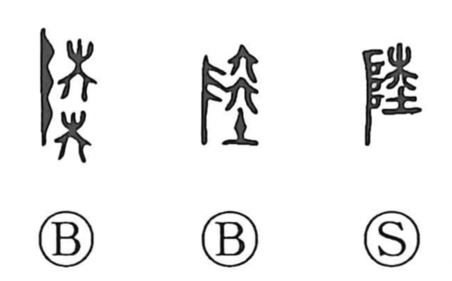

陸

Kun: oka, kuga | On: riku, roku
land ・ dry land ・ high ground
Explanation
A phono-semantic character: its phonetic element goes back to a form like ko (as in a graph shaped like 幸), conceived as 六 stacked upon itself. In bronze script, 六 sketches a small tent-like building. The semantic side is 阜, whose original shape depicts the gods’ ladder for ascending and descending. Together they indicate a raised, well-prepared ground—a camp set out to welcome the gods—and by extension “high, even land.” The Shuowen glosses it precisely so, and it is used for oka (hill, height) and kuga (land).